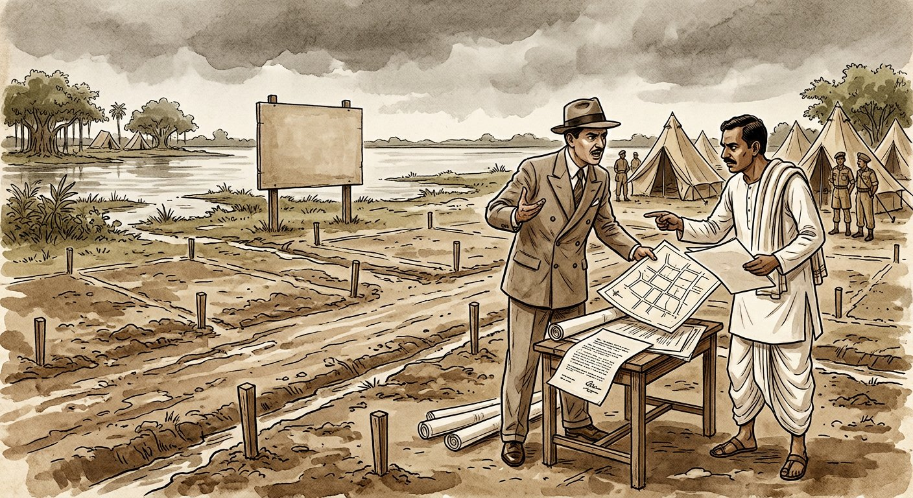
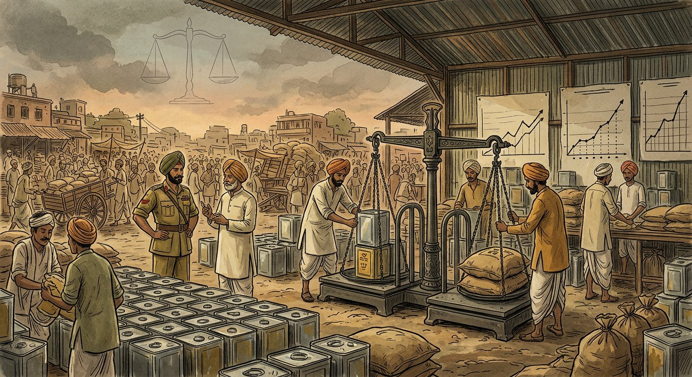
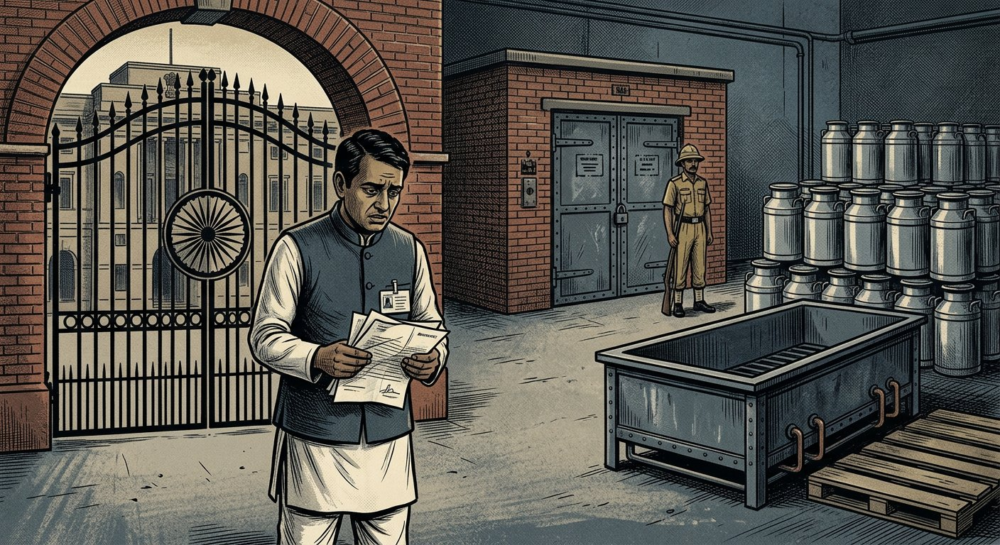
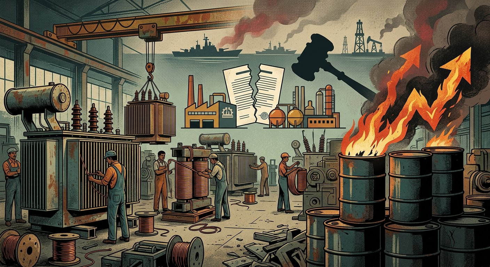

Topic 8: Discharge of a Contract — Performance, Frustration & Agreement
Indian Contract Act, 1872 — Sections 37 to 67 | Discharge by performance • Tender • Joint liabilities/rights • Time & place • Reciprocal promises • Frustration / supervening impossibility (S. 56) • Appropriation • Novation, rescission, alteration, remission (Ss. 62–67). Comprehensive deep notes strictly anchored in DU Case Material (2023) — Cases 29–32 (Book pp. 148–171) — with full statutory text, elements, illustrations, flowcharts, hypothetical case visuals, and DU-pattern PYQs with model answers.
📚 Primary source: DU Case Material LB-102 (2023)📜 Bare Act: ICA, 1872 (Ss. 37–67)⚖️ 4 DU cases in full IRAC++ format📝 12 PYQs + best model answers
Part A — Overview
1. Modes of discharge — the master map of Sections 37–67
“Discharge” = termination of the contractual bond — parties are freed from further performance (though accrued rights/remedies like damages and restitution may survive). Chapter IV (Ss. 37–67) deals with performance and the excuses from performance. Memorise this 6-mode map first; every DU question on Topic 8 sits inside one box:
CONTRACT ALIVE (S. 37: parties must perform or offer to perform)
⬇ discharged by ⬇
1. PERFORMANCE Ss. 37–39: actual + tender; Ss. 40–55: who/when/where/order
2. AGREEMENT S. 62: novation / rescission / alteration; S. 63: remission / extension / satisfaction
4. BREACH → rescission S. 39 (refusal/disabling); S. 53 (prevention); S. 55 (time-essence failure) → S. 64/75
5. OPERATION OF LAW death (personal contracts, Ss. 37/40); merger; insolvency; S. 65 restitution
6. NEGLECT OF PROMISEE S. 67: no facilities → promisor excused pro tanto
🔑 How DU examines this mapEssay magnets: S. 56 frustration (Cases 29–32) and Ss. 62–63 agreement-discharge. Problem magnets: tender (S. 38), joint promisors (Ss. 42–44), time essence (S. 55), appropriation (Ss. 59–61), novation vs assignment, S. 65 restitution after frustration. Always open with S. 37 (“must perform or offer, unless dispensed/excused”) and close with consequences (Ss. 64/65/73–75).
Part B — Ss. 37–39
2. Obligation to perform, tender of performance, and refusal (Ss. 37–39)
📜 S. 37 — Obligation of parties“The parties to a contract must either perform, or offer to perform, their respective promises, unless such performance is dispensed with or excused under this Act or any other law.” “Promises bind the representatives of the promisors on death before performance, unless a contrary intention appears.” Ill. (a): A to deliver goods to B for ₹1,000; A dies — representatives bound, B bound to pay them. Ill. (b): A to paint a picture for B; A dies — contract cannot be enforced by either side (personal skill).
Two ways to satisfy S. 37: (i) actual performance (doing the thing), (ii) offer/tender of performance (S. 38) — a valid tender discharges the tenderer though the contract itself survives for the other side’s duties.
Death:impersonal promises (pay money, deliver goods) devolve on legal representatives; personal-skill promises (paint, sing, marry) die with the person — read with S. 40.
📜 S. 38 — Effect of refusal to accept offer of performance (tender)“Where the promisor has made an offer of performance and it is not accepted, the promisor is not responsible for non-performance, nor does he lose his rights.” Every valid tender must: (1) be unconditional; (2) be at a proper time/place with reasonable opportunity to verify ability + willingness + completeness; (3) for goods, give reasonable opportunity to inspect that the thing is the contracted thing. “An offer to one of several joint promisees = offer to all.” Ill.: 100 bales of cotton to B’s warehouse on 1 March — A must bring the cotton there that day with inspection opportunity.
📌 Tender — 3 exam traps• Money must be actually produced (a mere letter “ready to pay” is no tender), unless promisee dispenses with production. • Conditional tender (“take it without inspection”) is invalid. • Valid tender → promisor excused + keeps rights (may still sue for price/damages); but goods/money remain at promisee’s risk.
📜 S. 39 — Refusal / disabling (anticipatory breach)“When a party has refused to perform, or disabled himself from performing, his promise in its entirety, the promisee may put an end to the contract, unless he has signified, by words or conduct, acquiescence in its continuance.” Ill. (a): singer wilfully absent on 6th night → manager may end contract. Ill. (b): manager lets her sing on 7th night → acquiescence → cannot end, but can claim compensation for 6th night.
Two options for the innocent party (S. 39 + S. 64/75): (i) rescind at once — sue immediately for damages (Frost v. Knight), no need to wait for due date; (ii) keep alive — affirm, continue, sue after due date — but bears risk of supervening events (e.g., frustration, Avery v. Bowden: ship never arrives, charterer’s refusal overtaken by war-frustration → no damages).
“In its entirety” — total repudiation (express words, or conduct disabling, e.g., selling to another, destroying subject-matter). Partial breach → damages, not termination (unless it goes to root).
Part C — Ss. 40–45
3. By whom must contracts be performed (Ss. 40–45)
📜 S. 40 — Person by whom promise is to be performed“If it appears from the nature of the case that the parties intended the promise to be performed by the promisor himself, it must be so performed. In other cases, the promisor or his representatives may employ a competent person.” Ill. (a): pay money — delegable (agent/representative may pay). Ill. (b): paint a picture — personal, must paint himself.
Test of personality: skill, taste, confidence, qualifications (artist, surgeon, author, lawyer, star performer). Express clause (“personally”, “to your satisfaction”) is conclusive.
Delegation ≠ assignment of burden: delegating performance does not shed liability — promisor remains liable for delegate’s default.
📜 S. 41 — Accepting performance from a third person“When a promisee accepts performance from a third person, he cannot afterwards enforce it against the promisor.”
S. 41 = statutory discharge by stranger’s performance once accepted (cf. S. 63(c) Ill.: C pays B ₹1,000 accepted in satisfaction of A’s ₹5,000 debt → whole claim discharged). No prior request needed; acceptance is key. Third person gets no independent S. 41 right against promisee, but may claim under S. 69 (person interested in payment) or S. 70.
📜 Ss. 42–44 — Joint promisorsS. 42 (devolution): joint promisors during joint lives → after one’s death, representative + survivors → after last death, representatives of all jointly — unless contrary intention. S. 43: promisee may compel any one or more to perform the whole (no need to sue all together — departs from English common law). Contribution: each may compel equal contribution; default loss shared equally by the rest. Explanation: surety/principal recoveries preserved. S. 44 (release): release of one joint promisor does not discharge the other(s), nor free the released from contribution to co-promisors.
📌 S. 43 illustrations — master the arithmetic (DU loves it)• Ill. (a): A, B, C owe D ₹3,000 jointly → D may compel any one for the whole ₹3,000. • Ill. (b): C pays whole; A insolvent (pays 50 paise/rupee of his ₹1,000 share = ₹500); B pays C ₹1,250 (own ₹1,000 + half of A’s ₹500 shortfall). • Ill. (c): C pays nothing; A pays whole → recovers ₹1,500 from B (B’s ₹1,000 + half of C’s ₹1,000). • Ill. (d): A, B mere sureties for C → recover whole from C (Explanation).
📜 S. 45 — Devolution of joint rightsPromise to two+ persons jointly → claim rests with them jointly in life → then deceased’s representative + survivors → then representatives of all jointly — unless contrary intention. Ill.: B, C lend ₹5,000 to A; B dies → claim with B’s representative + C; after C’s death → representatives of B and C jointly.
⚠️ Ss. 42 vs 45 — mirror imagesS. 42 = several persons owe (liability side). S. 45 = several persons are owed (rights side). Both reject English survivorship-only rule by letting representatives join survivors. “Unless contrary intention” — partners’ accounts, joint Hindu family, survivorship agreements may vary.
Part D — Ss. 46–50
4. Time and place for performance (Ss. 46–50)
Sec.
Situation
Rule
46
No application to be made + no time fixed
Perform within reasonable time (question of fact — nature of work, market, war conditions — cf. Satyabrata: no time limit for roads/drains).
47
Day fixed, no application needed
Promisor may perform any time during usual business hours on that day at the proper place. Ill.: goods after closing hour → not performed.
48
Day fixed, application needed
Promisee must apply at a proper place + usual hours (fact question).
49
No application + no place fixed
Promisor must ask promisee to appoint a reasonable place and perform there. Ill.: 1,000 maunds jute — A must seek B’s place.
50
Promisee’s directions
Performance in any manner/time the promisee prescribes or sanctions is good. Ills.: (a) bank transfer before bank fails → good payment; (b) set-off settlement → payment; (c) goods accepted in reduction → part-payment; (d) note posted as directed → debt discharged on posting.
✅ Exam hookS. 46 (“reasonable time”) is the bridge to Satyabrata: where the contract fixes no time limit at all, delay caused by temporary requisition cannot “upset the basis” measured against a deadline that never existed. S. 50(d) mirrors the postal rule logic (S. 4) for prescribed modes.
Part E — Ss. 51–55
5. Reciprocal promises: readiness, order, prevention, default, time (Ss. 51–55)
📜 S. 51 — Simultaneous performance“When reciprocal promises are to be simultaneously performed, no promisor need perform unless the promisee is ready and willing to perform his reciprocal promise.” Ills.: goods-for-price on delivery; first instalment on delivery — each may hold back unless the other is ready + willing.
📜 S. 52 — Order of performance“Where the order is expressly fixed, perform in that order; otherwise in the order which the nature of the transaction requires.” Ill. (a): build house for fixed price → build first, pay after. Ill. (b): stock for price + security → security first, delivery after.
📜 S. 53 — Prevention by one party“When one party prevents the other from performing, the contract becomes voidable at the option of the party so prevented, and he is entitled to compensation for loss from non-performance.” Ill.: B ready to execute work for A for ₹1,000; A prevents → B may rescind + recover loss.
📜 S. 54 — Default in the promise to be performed first“Where one promise cannot be performed/claimed till the other has been performed, and the promisor of the first-mentioned (prior) promise fails, he cannot claim the reciprocal promise and must compensate the other’s loss.” Ills.: (a) charterer provides no cargo → pays shipowner; (b) builder denied scaffolding/timber → owner compensates; (c) buyer doesn’t pay within week → seller need not deliver; (d) seller doesn’t deliver bales → buyer need not pay.
📝 S. 53 vs S. 54 — don’t confuseS. 53 = active prevention (one party blocks the other) → contract voidable at victim’s option + compensation. S. 54 = failure to perform the prior promise in a sequenced bargain → defaulter loses right to claim reciprocal performance + must compensate. S. 54 is the workhorse of construction/supply disputes (cf. Easun: who defaulted first — supplier’s delay or buyer’s termination?).
📜 S. 55 — Time as essence (3 paragraphs)Para 1 — essence: promise to do a thing at/before a specified time + failure → contract (or unperformed part) becomes voidable at promisee’s option, if time was of the essence. Para 2 — not essence: if not essence → not voidable; promisee gets compensation only for loss from delay. Para 3 — delayed acceptance: if promisee accepts belated performance of an essence-contract, he cannot claim compensation for delay unless he gives notice of his intention at acceptance. (U.P. amendment reverses this: notice unnecessary unless right waived.)
5.1 Is time of the essence? — the test DU expects
Intention of parties governs — express clause (“time is essence”, “cancel if late”) is strong but read with conduct: granting extensions (as FEDO did till 31-3-1975 in Easun) or accepting late delivery waives essence for that period.
Presumptions:commercial/mercantile contracts (shares, commodities, shipping) — ordinarily essence; land/construction contracts — ordinarily not essence (Gomathinayagam v. Pallaniswami; price escalation + development facts matter); government supply with liquidated damages — usually essence unless extended.
S. 55 + S. 63 interplay: promisee may extend time (S. 63) — extension without reserving compensation kills the delay-damages claim under para 3 (give notice!). Easun umpire’s inference is a live demo: no liquidated damages claimed + extensions granted → delay condoned → termination for pre-extension delay unjustified.
Did promisor fail to perform by the fixed time?
⬇ yes
Was time of the essence? (express term? commercial nature? no waiver/extension?)
YES → contract voidable at promisee’s option (rescind or affirm)
NO → contract stands; promisee gets compensation for delay-loss only
⬇ if promisee accepts late performance
Did he give notice reserving compensation? (S. 55 para 3)
S. 56Satyabrata (DU 148–157)Alopi (DU 158–161)Punj (DU 162–166)Easun (DU 167–171)
📜 S. 56 — full text (3 paragraphs)Para 1 — initial impossibility: “An agreement to do an act impossible in itself is void.” Para 2 — supervening impossibility/unlawfulness: “A contract to do an act which, after the contract is made, becomes impossible, or, by reason of some event which the promisor could not prevent, unlawful, becomes void when the act becomes impossible or unlawful.” Para 3 — known impossibility: “Where one person has promised to do something which he knew, or with reasonable diligence might have known, and which the promisee did not know, to be impossible or unlawful, the promisor must make compensation for loss through non-performance.”
6.1 All 5 illustrations (a)–(e) — each maps to a paragraph
Ill.
Facts
Paragraph + principle
(a)
Discover treasure by magic
Para 1 — inherently impossible → void ab initio.
(b)
Betrothed; A goes mad before marriage date
Para 2 — supervening incapacity → void when impossible.
(c)
A, already married, contracts to marry B (polygamy forbidden)
Para 3 — known unlawfulness → A must compensate B.
(d)
Cargo at foreign port; war declared after contract
Para 2 — supervening illegality (trading with enemy) → void on declaration.
(e)
Singer for 6 months, advance paid; ill on several occasions
Para 2 — partial/temporary impossibility → void as to those occasions (read with S. 65(d): advance refunded, no profit-loss damages).
⚠️ Drafting note from Satyabrata (DU p. 151)Mukherjea J. says the illustrations are “not at all happy” but “cannot derogate from the general words”. So: quote the paragraph text as the rule; use illustrations only as examples. The word “impossible” in para 2 is general — it carries the whole frustration doctrine.
6.2 “Impossible” = practical, not literal (Satyabrata, DU p. 151 — memorise)
⚖️ The definition passage (Mukherjea J.)“The word ‘impossible’ has not been used in the sense of physical or literal impossibility. The performance may not be literally impossible but may be impracticable and useless from the point of view of the object and purpose the parties had in view; and if an untoward event or change of circumstances totally upsets the very foundation upon which the parties rested their bargain, it can very well be said that the promisor finds it impossible to do the act he promised.” Support: Lord Loreburn in Tamplin v. Anglo-Mexican (1916) — “substantially the whole contract becomes impossible/impracticable by some cause for which neither was responsible”; Viscount Maugham in Constantine v. Imperial Smelting (1942) — “frustration is only a special case of discharge by impossibility arising after the contract”; Kesari Chand v. Governor-General (Nagpur) + Ganga Saran v. Ram Charan AIR 1952 SC 9 (Fazl Ali J.: courts must look primarily to Ss. 32 and 56) — all approved.
6.3 S. 56 exhausts frustration — English law only persuasive (DU p. 152)
Three holdings: (i) frustration is part of S. 56 (supervening impossibility/illegality); (ii) S. 56 is not confined to physical impossibility; (iii) where the Act deals with a subject it is exhaustive — no importing English principles dehors the statute; English decisions are persuasive only.
English evolution (know the stations for essays):Paradine v. Jane (1647, absolute contracts) → Taylor v. Caldwell (1863, Blackburn J.: implied condition — music hall burnt) → Robinson v. Davison (1871, Bramwell B.: illness; contract conditional, not absolute) → “justice-demands exception” (Hirji Mulji; Dahl v. Nelson: what fair reasonable men would have agreed) → Lord Wright (Constantine 1942; Denny Mott 1944: implied term is no explanation; doctrine invented by courts to supplement defects) → Denning LJ (British Movietonews 1951: court’s qualifying power to do just and reasonable — “day is gone” for prophet-foresight) → reversed by HL (Viscount Simon 1952: no wider power; principle same — construction).
Indian re-framing (DU pp. 154–155): construction appears in two ways — (a) true construction: parties actually agreed (express/implied, S. 9) to discharge on an event → operates under the contract itself / S. 32 (contingent contracts), outside S. 56; (b) frustration proper: parties never thought of the event; court finds the whole purpose/basis frustrated by intrusion of unexpected change → relief on subsequent impossibility → this is positive law = S. 56 (belief/intention are evidence only; court forms own conclusion — Morgan v. Manser). If parties expressly stipulated performance despite the event (Matthey v. Curling), no frustration — basis cannot disappear.
Did the contract itself (express/implied term, S. 9) provide for discharge on this event?
YES → discharge under contract / S. 32 (contingent) — NOT S. 56
NO → did an uncontemplated, fundamental change strike at the root / destroy basis?
⬇ yes → S. 56 PARA 2 — VOID (court’s ex post facto finding; automatic, not elective)
6.4 Grounds of frustration recognised (with authorities)
Ground
Content + authority
Destruction of subject-matter
Taylor v. Caldwell (hall burnt); S. 56 Ill. (b) analogue. Total loss needed; partial → S. 56 Ill. (e) split.
Death / incapacity (personal contracts)
Robinson v. Davison; S. 56 Ills. (b), (e); Ss. 37/40.
Supervening illegality
S. 56 Ill. (d) (war); export/import bans; requisition vesting title. Promisor must show event he could not prevent.
Non-occurrence of contemplated event / purpose failure
Krell v. Henry (coronation rooms); adventure’s foundation gone though performance literally possible.
Government/legislative intervention
Requisition (Satyabrata — temporary, so no frustration on facts); canalisation + refusal of release (Punj Sons — frustration proved); bans, priorities (Sannidhi Gundayya AIR 1927 Mad 89 — wagons).
Fundamental-basis upset by abnormal change
Satyabrata test; Easun extension — 400% war-driven rise + force-majeure clause (controversial — see Part M).
6.5 What is NEVER frustration — the five negatives (Alopi-centred)
Mere onerousness / price rise: “wholly abnormal rise/fall in prices, depreciation, unexpected obstacle” does not affect the bargain (Lord Wright, Constantine, quoted in Alopi para 21). Alopi: WWII ghee-price explosion → no frustration; contract performed and paid at stipulated rates. Courts have no general liberty to absolve from onerous performance (para 22).
No equity override / no quantum meruit where rates fixed: “The Act does not enable a party to ignore express covenants and claim different rates on vague plea of equity” (para 21). Quantum meruit lies only where price not fixed; express stipulation cannot be displaced as unreasonable (para 23/24). Vague assurances (Director of Purchases) cannot modify without express covenant (para 24); S. 222 indemnity ≠ enhancement of consideration.
Self-induced impossibility: party who himself causes the event (default, breach, failure to apply) cannot plead S. 56 — “event which the promisor could not prevent”.
Foreseen / provided-for events: risks in contemplation (war on in 1940 — Satyabrata; graded war-scale in 1942 — Alopi) or covered by force-majeure/escalation clause → governed by contract/S. 32, not S. 56. Easun turns on its Clause 18 wording.
Alternative mode available / temporary delay only:Satyabrata — temporary requisition + no time limit + no work yet begun → basis not upset; Sushila Devi / Govind Bhai line: leases generally not frustrated (executed demise, estate transferred — though Satyabrata holds Indian agreements to sell (S. 54 TPA, no interest created) can be frustrated, unlike English equitable-conversion rule in Hillingdon Estates).
📌 The Alopi “fundamentally different situation” passage (para 21 — both sides use it)“If … they never agreed to be bound in a fundamentally different situation which has now unexpectedly emerged, the contract ceases to bind — not because the court thinks it just to qualify terms, but because on true construction it does not apply.” Alopi holds this did not arise (rates revised in war; performed). Easun holds it did arise (400% abnormal war rise + Clause 18). In answers: state the passage, then distinguish the two applications.
6.6 Effects of frustration
Automatic dissolution (Satyabrata, DU p. 156, per Lord Wright 1944 AC 265): not elective (unlike rescission for breach); court decides ex post facto on actual circumstances; one party claims, other denies — court pronounces.
Void when impossible/unlawful (para 2) — future performance excused; no damages for non-performance thereafter.
Restitution — S. 65: advantage received under contract-becoming-void must be restored/compensated (advance price, part deliveries — Ills. (b), (d)). Para 3 compensation only where promisor knew/ought to have known of impossibility unknown to promisee.
Denning’s “qualifying power” rejected: court cannot rewrite terms to suit new situation (HL in Movietonews; Alopi para 22) — it either holds the contract applies (enforce as written) or does not apply (void).
Part G — Ss. 57–58
7. Reciprocal and alternative promises mixing legal + illegal (Ss. 57–58)
📜 S. 57 — Reciprocal promises: legal + illegal“Where persons reciprocally promise, firstly, to do certain things which are legal, and secondly, under specified circumstances, to do certain other things which are illegal, the first set is a contract, the second a void agreement.” Ill.: sell house for ₹10,000 (contract) + pay ₹50,000 if used as gambling house (void).
📜 S. 58 — Alternative promise, one branch illegal“The legal branch alone can be enforced.” Ill.: pay ₹1,000 for rice or smuggled opium → valid for rice, void as to opium.
📝 Severance trio: S. 24 vs Ss. 57–58S. 24 (Topic 7): single indivisible consideration tainted in part → whole void. Ss. 57–58: promises divisible into sets/branches → legal part saved. Test: can the lawful promise stand alone with its own consideration? If yes → enforce; if the price is one lump for both → S. 24 kills all.
Part H — Ss. 59–61
8. Appropriation of payments — whose debt does money discharge? (Ss. 59–61)
Where a debtor owes several distinct debts to one creditor and pays a sum, which debt stands discharged? The Act gives a 3-tier priority (the Indian codification of Clayton’s Case (1816)):
Tier 1 — S. 59: DEBTOR’S choice Express intimation or implied circumstances → creditor, if he accepts, must apply accordingly. Ills.: (a) ₹1,000 on promissory-note due date → to that note; (b) ₹567 sent against demanded sum → to that debt.
⬇ if debtor silent
Tier 2 — S. 60: CREDITOR’S discretion Creditor may apply to any lawful debt actually due and payable — even if time-barred.
⬇ if neither appropriates
Tier 3 — S. 61: LAW’S order Order of time (oldest first), whether barred or not; if equal standing → proportionately.
S. 59 illustrations drill: payment matching a unique due amount/date = implied intimation. Creditor who wants to reject the earmarking must refuse the payment, not accept-and-divert.
S. 60 scope: “lawful debt actually due and payable” — includes time-barred debts (expressly!). Creditor may even apply to the most precarious debt. But not to disputed/unadjudicated claims or before due date.
S. 61 = Clayton’s rule: first-in-first-out; pari passu if simultaneous. Applies to running accounts (banker-customer) unless contrary agreement.
Exam tip: appropriation questions are arithmetic + tier-tracing — identify (i) distinct debts, (ii) any intimation, (iii) creditor’s election, (iv) default order. Distinguish S. 50(b) set-off (mutual debts settled by agreement).
Part I — Ss. 62–67
9. Contracts which need not be performed: novation, rescission, alteration, remission (Ss. 62–67)
📜 S. 62 — Novation, rescission, alteration“If the parties agree to substitute a new contract for it, or to rescind or alter it, the original contract need not be performed.” Ill. (a) — novation by change of debtor: A owes B; A, B, C agree B accepts C as debtor instead of A → A’s debt ends, C’s begins. Ill. (b) — new contract: ₹10,000 debt replaced by ₹5,000 mortgage → old extinguished. Ill. (c) — no novation without assent: B orders A to credit C, C does not assent → B still owes C; no new contract.
9.1 Novation — the 4 essentials (DU favourite)
Subsistence of an old valid contract capable of discharge.
Agreement of ALL parties (including the new party / continuing party) — Ill. (c) fails here. A bilateral deal cannot novate away a third party’s rights.
Substitution — new contract (new debtor, new creditor, or new terms) in place of old. Change may be of parties (Ill. a) or terms (Ill. b).
Intention to extinguish (animus novandi) — old contract dies; no residual liability. Mere variation/supplement without extinction = alteration, not novation.
📝 Novation vs assignment vs alterationNovation (S. 62): old contract extinguished, new one born — needs all parties’ consent; burden can pass. Assignment: transfer of benefit only (burden cannot be assigned without novation) — debtor’s consent unnecessary for benefit-transfer, but assignee takes subject to equities. Alteration (S. 62): parties vary terms of same contract (material change needs writing/proof); original obligation survives as modified. Easun side-note: FEDO’s purchase-order amendments (3-3/7-3-1973) = alteration, not novation.
📜 S. 63 — Promisee may remit / dispense / extend / accept satisfaction“Every promisee may dispense with or remit, wholly or in part, performance … or extend the time … or accept instead any satisfaction he thinks fit.” No consideration needed for remission (departs from English Foakes v. Beer / Pinnel’s Case). Ills.: (a) forbid painting → discharged; (b) accept ₹2,000 for ₹5,000 debt → whole discharged; (c) accept ₹1,000 from C for A’s ₹5,000 → whole discharged (cf. S. 41); (d) unascertained sum → accept ₹2,000 → discharged whatever the amount; (e) composition 8 annas/rupee → payment discharges.
Remission needs no consideration — but needs promisee’s assent (express or implied from acceptance). Part-payment accepted as full satisfaction kills the balance — Ill. (b) is the exam one-liner.
Extension of time (S. 63) interacts with S. 55 para 3 (notice for delay damages) and S. 135 (giving time to principal debtor discharges surety unless surety assents) — always cross-cite in surety problems.
Accord and satisfaction:accord (agreement to accept X instead) + satisfaction (actual X) — Ills. (b)–(e) are all accord-and-satisfaction; executory accord alone (promise to accept later) does not discharge till performed.
📜 S. 64 — Consequences of rescinding a voidable contract“When the party at whose option a contract is voidable rescinds it, the other party need not perform. The rescinding party must restore, so far as may be, any benefit received thereunder.” (Cf. S. 75 — rightfully rescinding party also gets compensation.)
📜 S. 65 — Advantage under void agreement / contract-becoming-void“When an agreement is discovered to be void, or a contract becomes void, any person who has received any advantage thereunder is bound to restore it or compensate.” Ills.: (a) ₹1,000 for marrying dead C → repay; (b) 130/250 maunds retained → pay for them; (c) singer rescinded after 5 nights → theatre pays for 5 nights sung; (d) ₹1,000 advance, singer ill → refund advance, but no profit-loss damages.
⚠️ S. 64 vs S. 65 — classic DU distinctionS. 64 = voidable contract rescinded by aggrieved party → rescinder restores benefits (only rescinder bound; other side merely excused + S. 75 damages). S. 65 = void ab initio discovered OR contract becoming void (S. 56 frustration, S. 32 contingency failure) → whoever received advantage restores (both sides symmetrically). S. 65 does not apply where the agreement was known to be void/illegal from the start (Kedar Nath Motani limits; in pari delicto) — “discovered to be void” implies initial belief in validity. After frustration, S. 65 gives restitution, not expectation damages (Ill. (d)).
📜 S. 66 + S. 67 — Mode of rescission; promisee’s neglectS. 66: rescission of voidable contract is communicated/revoked like a proposal (Ss. 3–6): complete against proposer on despatch, against acceptor on knowledge. S. 67: promisee who neglects/refuses reasonable facilities excuses the promisor pro tanto (to the extent caused). Ill.: B won’t point out repair spots → A excused for resulting non-performance. (Distinct from S. 53 prevention (voidable + damages) and S. 38 refusal of tender.)
Part J — DU Case 29 (Book pp. 148–157)
DU Case 29 ★★ The foundation authority on S. 56
Satyabrata Ghose v. Mugneeram Bangur & Co., AIR 1954 SC 44 (Mukherjea J.)
S. 56 ICA · S. 32 (contingent) · S. 54 Transfer of Property Act | Question: Did wartime requisition of development-scheme land frustrate the plot-sale contract? | Answer: No — temporary requisition + no time limit + war contemplated = basis not upset; contract subsists. (Appeal allowed; HC reversed.)

Hypothetical visual — Mugneeram’s Lake Colony Scheme No. 1 near Dhakuria Lakes: plots sold on earnest with roads/drains to follow; part of the tract requisitioned under Defence of India Rules for wartime military use; the company treats the sale as cancelled.
Facts (DU pp. 148–150 — “for the most part uncontroverted”)
Scheme: Mugneeram Bangur & Co. owned a large tract near Dhakuria Lakes, Greater Calcutta; floated Lake Colony Scheme No. 1 (residential development); divided land into plots, invited offers.
Business model: agreements with purchasers taking only small earnest upfront; company to construct roads and drains to make land buildable; purchaser then called to complete conveyance on balance payment.
Contract (5-8-1940): Bejoy Krishna Roy (defendant 2 / pro forma respondent) agreed to buy ~5 cottahs in Plot 76 (20 & 30 ft. road, Southern Block) at ₹1,000/cottah; paid ₹101 earnest. Receipt terms: conveyance within one month from completion of roads on balance payment (time essence; default → cancellation + forfeiture); tenure Mokarari Mourashi; payment: one-third at registration, balance within 6 years @ 6%.
Nomination/assignment (30-11-1941): Bejoy made appellant Satyabrata Ghose his nominee — held by trial + first appellate courts to be really an assignee of Bejoy’s rights.
Requisitions: Collector, 24-Parganas, order 12-11-1941 under R. 79, Defence of India Rules (portion for military purposes); second part 20-12-1941; balance later — eventually whole scheme area requisitioned.
Company’s letter (Nov 1943): considerable portion in Government possession, no knowing how long retained; roads/drains impossible during war + possibly years after → treats agreement cancelled; option: (a) take back earnest within one month, or (b) complete conveyance within one month on full balance, taking land as-is, roads/drains later “as circumstances permit” after war; silence → deemed cancellation + forfeiture. Bejoy passed it to Satyabrata; lawyer correspondence followed.
Plaintiff’s stand:rejected both alternatives; company bound, cannot resile.
Suit (18-1-1946): two-fold declaration — (1) contract of 5-8-1940 still subsists; (2) plaintiff entitled to conveyance on payment per agreement terms.
Lower courts:Trial (10-10-1947): decree — all defences overruled. District Judge, 24-Parganas (25-2-1949): affirmed. High Court (Das Gupta + Lahiri JJ): reversed — sole question frustration; held requisition frustrated the contract; suit dismissed. Supreme Court (Art. 133(1)(c) certificate): appeal allowed; HC set aside; decrees below restored.
Issues
Does English frustration law apply in India, or only S. 56? What is S. 56’s scope?
Does frustration apply to contracts for sale of land at all?
On facts, did requisition take away the basis / render performance impossible (S. 56 para 2)?
Appellant (Satyabrata) — Attorney-General’s 3-fold case
(1) English frustration inapplicable — only S. 56 governs (statutory, exhaustive).
(2) Even in England, frustration does not apply to land-sale contracts (English judges’ own view).
(3) On facts, no frustrating event — basis intact, performance not impossible in any sense.
Respondent (Company) — defences
Requisition made a material part (roads/drains + delivery) impossible for an indefinite/unknowable period → contract discharged by frustration.
Offered fair alternatives (refund / as-is conveyance); plaintiff’s insistence keeps company bound forever to an unperformable scheme.
Decision (Mukherjea J. — appeal allowed)
Point 1 — S. 56 governs; English law persuasive only: S. 56 (Ch. IV, performance) = excuse-ground making contract void. Para 1 (initial impossibility) = same as England. Para 2 = supervening impossibility/illegality — general wording; unhappy illustrations cannot cut it down. “Impossible” = practical (impracticable/useless; foundation totally upset — DU p. 151). Frustration = special case of post-contract impossibility (Tamplin; Constantine; Kesari Chand; Ganga Saran). Holdings (DU p. 152): doctrine within S. 56; not confined to physical impossibility; Act exhaustive — no English import dehors statute. English theories marched through: Taylor; Robinson (implied condition) → justice-exception (Hirji Mulji; Dahl) → Lord Wright (Constantine; Denny Mott — implied term no explanation, court-made supplement) → Denning (Movietonews CA — qualifying power) → HL reversal (Viscount Simon — construction only). Indian synthesis (DU pp. 154–155): true agreed term → S. 32/contract itself (outside S. 56); unthought-of fundamental change → court pronounces frustration = S. 56 positive law (Morgan v. Manser; intention = evidence only). Express “perform despite event” clause (Matthey v. Curling) negatives frustration. Extreme contention (English frustration wholly outside S. 56) rejected.
Point 2 — land-sale contracts CAN be frustrated in India: English rule (Hillingdon Estates v. Stonefield) rests on equitable conversion (buyer = equitable owner; seller = trustee for purchase money) — frustration kills pure contract, not accrued estate. India: S. 54 TPA — agreement to sell creates NO interest → obligations = ordinary contract → no reason to exclude; contention fails.
Point 3 — NO frustration on facts: (i) Frustration = automatic, not elective; decided ex post facto (Lord Wright 1944 AC 265). (ii) Contract = integral development scheme (not ordinary plot sale): company to develop vast area; buyer to get developed, buildable land. (iii) No time limit whatsoever for roads/drains (Alipore DJ finding; no understanding either); 15 months passed before first requisition with no work done. (iv) War already on at contracting; requisitions + material scarcity + restrictions normal, in contemplation — hence no deadline, left to company’s convenience. (v) Requisition = temporary by nature (authority = licensee); might last through war + after, or be withdrawn early; work not yet commenced → nothing interrupted, only commencement delayed. Delay vs non-existent deadline cannot “upset the basis”. (vi) HC relied entirely on time factor — but parties contemplated only a reasonable period given magnitude + war; requisition did not vitally affect or strike at roots. Contract NOT frustrated; subsists.
⚖️ Principles evolved (the S. 56 charter — quote in every answer)1) Frustration ⊂ S. 56 para 2; S. 56 exhaustive; English law persuasive only. 2) “Impossible” = practical/foundation test. 3) S. 32 vs S. 56 divide: agreed contingency-term → S. 32; unthought fundamental change → S. 56. 4) Automatic + ex post facto dissolution. 5) Indian land-sale agreements frustrable (S. 54 TPA). 6) Foreseen + no-deadline + temporary + not-yet-begun delay ≠ frustration. 7) Court cannot rewrite (HL Movietonews preferred over Denning).
Part K — DU Case 30 (Book pp. 158–161)
DU Case 30 ★★ Onerousness ≠ frustration; no equity override
M/s. Alopi Parshad & Sons Ltd. v. Union of India, AIR 1960 SC 588 (Shah J.)
S. 56 ICA · Quantum meruit · S. 222 (agency indemnity) | Question: Can a supplier ignore fixed rates and claim enhanced payment because war made performance onerous? | Answer: No — altered/onorous ≠ impossible; no equity jurisdiction to rewrite rates; award set aside. (Appeal dismissed.)

Hypothetical visual — Alopi Parshad’s wartime agency: bulk ghee purchased for Army personnel at fixed graded rates; WWII demand explosion and soaring establishment/mandi costs; the agents claim 20–112% enhancements on equity.
Facts (DU pp. 158–159)
Agency (3-5-1937, w.e.f. 1-10-1937): Alopi Parshad appointed agents of Governor-General in Council to purchase ghee for Army personnel. Cl. 12: Government to pay actual expenses (ghee cost, empty tins, railway clearance, export/land-customs, octroi, terminal/local rates) + specified charges (establishment, contingencies, buying remuneration, mandi, financing).
War (Sept 1939):enormous increase in Government ghee demand.
Revision by mutual consent (20-6-1942) — nearly 3 years into war: flat Re. 0-14-6 per 100 lbs (establishment/contingencies) → graded scale (first 5,000 tons: 0-14-6; next 5,000: 8 annas; beyond 10,000: 4 annas); remuneration also graded. Agents thus knew the altered circumstances when re-agreeing.
Demand (6-12-1943): +25% buying remuneration, +20% establishment/contingencies, +112% mandi/financing — peace-time rates “entirely superseded by totally altered war conditions”. No immediate reply; Agents continued supplying till May 1945.
Termination (17-5-1945): Government exercised Cl. 9 option, ended agreement.
Claim (1-3-1954): supplementary agreement of 1942 void / not binding; Chief Director of Purchases (duly authorised) gave repeated verbal assurances (Dec 1943 + after) that enhancements would be favourably considered; relying on them, Agents supplied with “heavy extra expenditure”. Disputes → arbitration.
Award → High Court → Supreme Court: arbitrators ignored express rates, awarded on quantum meruit / S. 222 indemnity basis; High Court set aside (error apparent); Supreme Court affirmed — appeal dismissed with costs (para 26).
Issues
Was the contract frustrated because war-time circumstances “entirely displaced” the 1937 conditions?
Can arbitrators/courts ignore express rate covenants and award quantum meruit / equitable enhancement for onerous performance?
Do verbal assurances or S. 222 agency indemnity sustain the extra claim?
Agents (Mr. Chatterjee) — arguments
War entirely displaced 1937 circumstances; bargain made for peace cannot bind in war — frustration / fundamentally different situation.
Modern English rule (Denning LJ, Movietonews 1951) lets courts qualify literal terms for uncontemplated turns — do what is just and reasonable.
Denied assurances and reliance; rates were re-fixed in war (1942) with open eyes — no uncontemplated change thereafter.
Contract actually performed + paid — performance was never impossible or unlawful; onerousness ≠ frustration.
No jurisdiction to rewrite express covenants on vague equity; quantum meruit excluded where price fixed; S. 222 covers indemnity for acts, not rate enhancement.
Award suffers error apparent — liable to be set aside.
Decision (Shah J. — appeal dismissed)
Frustration — “untrue in fact, unsupportable in law” (para 20): revision was June 1942, ~3 years after war began — Agents fully aware of altered circumstances when agreeing graded scales. And in law, “a contract is not frustrated merely because circumstances are altered”.
Performed, not impossible (para 21): ghee actually supplied, stipulated remuneration received. “The Act does not enable a party to ignore express covenants and claim different rates on vague plea of equity.” Lord Wright (Constantine) quoted: abnormal price/currency/obstacle does not affect the bargain — unless terms, construed in original circumstances, show parties never agreed to be bound in the fundamentally different situation (then it ceases to bind by true construction, not judicial discretion).
No general absolution for onerousness (para 22): “No general liberty to absolve from liability merely because performance became onerous” — law of India and England. Denning’s Movietonews view negatived by HL (1952 AC 166); based on misreading of Parkinson v. Commissioners of Works (1949 — which only implied a term capping additional work on true interpretation, no general principle). Codified Indian law never permits departing from express terms while holding parties bound.
Quantum meruit rejected (para 23): arbitrators not justified in discarding rates for quantum meruit. Rule (para 24/25): quantum meruit = reasonable compensation on implied promise where price not fixed; for work under a contract fixing consideration, it cannot be awarded; express stipulation cannot be displaced as unreasonable.
S. 222 + assurances rejected (para 24): claim was enhancement of agreed consideration, not indemnity for lawful-act consequences. Vague assurances, absent express modifying covenant, cannot modify the governing contract.
⚖️ Principles evolved1) Altered/onerous ≠ frustrated; war-known re-agreement kills the plea. 2) No equity rewrite of express rates; no quantum meruit where price fixed. 3) Denning’s qualifying power rejected in India (HL view adopted). 4) Vague assurances ≠ modification; S. 222 ≠ rate enhancement. 5) “Fundamentally different situation” test stated — but not satisfied here (contrast Easun).
Part L — DU Case 31 (Book pp. 162–166)
DU Case 31 ★ Canalised-item impossibility; implied term
Punj Sons Pvt. Ltd. v. Union of India, AIR 1986 Del. 158 (R.N. Aggarwal J.)
S. 56 para 2 ICA · Implied conditional obligation · Arbitration (non-speaking award, damages) | Question: Where tin ingots (canalised, unprocurable without Government release) are essential to a supply contract, and release is refused despite efforts, is the contract frustrated? | Answer: Yes — beyond promisor’s control → void u/s 56 para 2; award quashed (also: no valid risk purchase + baseless damages = misconduct).

Hypothetical visual — Punj Sons’ 8,420 milk-container contract: “hot dip tin coating” mandatory, but tin ingots canalised through MMTC and unavailable in the open market; quota requests to DGS&D/DGTD fail; the contract is cancelled at the supplier’s risk and expense.
Facts (DU pp. 162–164 — correspondence chronology matters)
Contract (1-5-1969): Punj Sons (New Delhi) ↔ Union of India — supply 8,420 milk containers, 20 litres, per spec. IND/GS/1182 mandating “hot dip tin coating” with tin ingots.
Quota efforts:13-5-1969 — request to Director General of Supplies & Disposals (DGS&D) for quota certificate; 2-6-1969 — request to Director General of Technical Development (DGTD) for release of 5 MT tin ingots; DGS&D recommended to DGTD; correspondence continued — DGTD/M.M.T.C. never released.
Amendment plea (21-8-1970): release possible only if A/T amended to provide for it → request amendment. Reply (24-9-1970):no stipulation in A/T for tin assistance; ex gratia consideration only with price reduction; without prejudice to purchaser’s rights. Rejoinder (15-10-1970): raw-material/labour prices up → no reduction possible; please issue quota.
Cancellation (28-11-1970): “failed to supply → cancelled at your risk and expense; extra repurchase cost to follow; without prejudice.”
Risk-purchase saga: Dec 1970 tender — petitioner’s ₹65/container (lowest) + one similar offer → not accepted (petitioner wouldn’t drop “inconvenient terms” / furnish 10% advance security); fresh tender — Can Manufacturing, Bombay @ ₹70 → also did not mature. 1975 rate-fishing: DGS&D circular (21-11-1975) asking 1970 rates for IK E-0306; single reply — Delhi Brass & Metal Works (6-12-1975): ₹90 “for information, without commitment” (note: A/T item is IK-F-0306; no purchase/sale evidence; no actual transaction).
Claim (13-2-1976): ₹3,13,224 damages → denied (24-4-1976) → arbitration (Dr. Bakhshish Singh, Addl. Legal Adviser) → non-speaking award of ₹3,13,224 to UOI → objections u/Arbitration Act before Delhi HC.
Admitted facts: UOI’s reply + Khan affidavit (9-7-1984) admit tin ingots not available in market; petitioner’s canalisation assertion (MMTC issue only on UOI recommendation) undisputed. UOI witness Jaishi Ram: no actual loss; no repurchase.
Issues
Did the contract stand frustrated (S. 56 para 2) for non-availability of essential canalised tin ingots beyond promisor’s control?
Can a supply/release term be implied though the A/T is silent?
Was the ₹3,13,224 award sustainable (risk purchase? evidence? misconduct)?
Petitioner-Objector (Punj Sons, Mr. Chandhiok) — arguments
Tin ingots essential (hot-dip spec); canalised, unavailable openly; procurable only via Government release.
Earnest, prompt endeavours (May–June 1969 onward); DGS&D tried but failed to secure release; amendment refused → impossibility beyond control → frustrated, void (S. 56 para 2).
No valid risk purchase → no loss (Jaishi Ram) → no damages; ₹3,13,224 baseless — single 1975 “information-only” letter, wrong item code, no transactions → serious misconduct.
Claimant-Respondent (Union of India) — arguments
No condition/stipulation/understanding in tender/A/T to arrange release orders/import licences; supplier bound to deliver in time regardless.
Ingots’ non-availability admitted, but claimant not obliged to make them available.
Risk-purchase tenders failed on objector’s terms/security default; Can Mfg. ₹70 order placed but not a valid risk purchase → general damages claim legal; award valid.
Decision (Aggarwal J. — objections allowed; award quashed)
Crucial question = frustration (para 11).Undisputed (para 12): hot-dip tin coating essential; tin ingots canalised; not in open market; MMTC issue only on UOI recommendation; immediate + repeated requests; DGS&D efforts failed; amendment refused.
Implied term (para 13): UOI’s “no stipulation” contention rejected — parties knew at contracting tin was needed and canalised → “condition of supply of tin ingots can be implied from the nature of the contract”. Release never obtained → performance impossible beyond promisor’s control → “clearly hit by paragraph 2 of Section 56”.
Support (para 15):Sannidhi Gundayya v. Illoori Subbaya AIR 1927 Mad 89 (Div. Bench) — rice + railway wagon restrictions (known war measure): “law does not imply absolute obligation to do what law forbids; seller agreed if, after best endeavours, he could secure wagons” → obligation impliedly conditional. Same logic here (best endeavours + canalisation).
Damages misconduct (paras 17–19): sole basis = 6-12-1975 “information-only” letter (wrong code IK E vs IK-F, no actual transactions, 5 years after breach) → “serious misconduct”; Jaishi Ram: no actual loss, no repurchase → award bad, unsustainable (para 20).
⚖️ Principles evolved1) Canalised-essential-input + known-to-both + release refused despite best efforts = S. 56 para 2 frustration. 2) Supply term implied from nature of contract though A/T silent. 3) No valid risk purchase + no loss → no damages; hypothetical 5-year-late rate fishing = misconduct. 4) Government as buyer-cum-canaliser cannot both withhold release and demand performance/damages.
Part M — DU Case 32 (Book pp. 167–171)
DU Case 32 ★ Force majeure + 400% rise; Alopi distinguished
Easun Engineering Co. Ltd. v. The Fertilizers & Chemicals Travancore Ltd., AIR 1991 Mad. 158 (Abdul Hadi J.)
S. 56 ICA · Force-majeure Clause 18 · S. 55 (time/liquidated damages) · Arbitration (error apparent; specific question of law) | Question: Did a 400% war-driven transformer-oil rise under a firm-price contract with a force-majeure clause justify price variation and defeat termination? | Answer: Yes — “fundamentally different situation” (Alopi’s own passage) + Clause 18 + condoned delay → umpire’s award upheld; FEDO’s set-aside petition dismissed.

Hypothetical visual — EASUN’s power-transformer fabrication for FEDO’s Cochin project: Middle-East war and excise hikes send transformer-oil prices up 400%; six of eighteen units delivered late; FEDO terminates and EASUN claims price variation before the umpire.
Facts (DU pp. 167–169)
Contract: FEDO (FACT Engineering & Design Organisation) purchase order 5-2-1973 (+ amendments 3-3/7-3-1973) with EASUN — supply + install 18 power transformers at Cochin. Only 6 supplied → dispute → Umpire (2nd respondent) via High Court order 19-9-1977 (Appl. 2785/1977 in C.S. 366/1975).
Claims: EASUN — Annexure A ₹13,07,417 + B ₹10,30,716 + C ₹3,06,000 = ₹26,44,243. FEDO counter-claim ₹12,33,325.75.
Contract terms (award):firm price — no escalation till complete execution/delivery; delivery to commence 10th month, complete 14th month; time essence; FEDO entitled to liquidated damages for delay — except delay from “force majeure”; FEDO may terminate + reassign if EASUN fails to conform to fabrication schedule without sufficient cause.
Termination (3-9 / 18-9-1975): FEDO ends contract. EASUN: unilateral, unjustified; obligations discharged; FEDO in breach → damages. FEDO: EASUN breached schedule; termination the only alternative → counter-damages.
Schedule vs actual: delivery due commence 19-10-1973, complete 19-2-1974; erection/commissioning by 19-6-1974. Actual: 6 units 14-6-1974 → 17-3-1975 (value ~₹17 lakh ≈ two-thirds of total); 12 unsupplied (4 tested July/Sept 1974).
EASUN’s force-majeure plea: prevented by strikes, power cuts, phenomenal transformer-oil rise (war etc.). Extensions granted till 31-3-1975 on repeated requests → umpire: FEDO cannot rely on pre-31-3-1975 delay. Oil +400% (Middle-East war + GOI excise ordinance) — documentary + oral evidence. Liquidated damages never claimed in counter-claim; written statement silent on why → umpire infers force majeure + condonation.
Clause 18 (quoted verbatim): “Neither supplier nor FEDO in default so long as performance is prevented or delayed because of strikes, war, hostilities, revolution, civil commotion, epidemics, accidents, fire, wind, flood, law/proclamation/regulation/ordinance, Act of God, or any other cause beyond the control of parties affected.”
Issues
Is a 400% war-driven oil rise a force-majeure condition under Clause 18 though it raised cost rather than literally “preventing/delaying”?
Does Alopi Parshad (firm price + war rise → no relief) bar price variation here?
Was FEDO’s termination justified, given extensions + no liquidated-damages claim?
Is the award vitiated by error of law apparent? Was a specific question of law referred (Tarapore v. Cochin Shipyard AIR 1984 SC 1072)?
Clause 18 covers only prevented or delayed performance — cost rise neither prevented nor delayed supply → outside force majeure.
EASUN defaulted on schedule → termination + counter-claim justified. No specific question of law was referred, so incidental legal error is correctable.
EASUN (award-holder) — defence
400% rise was unexpected, unforeseen, beyond control (war + excise ordinance) → deemed force majeure; umpire rightly allowed variation for oil.
Alopi itself contains the “fundamentally different situation” passage — applies here; Alopi’s actual denial rested on vague equity plea on its facts.
Delay extended/condoned (till 31-3-1975); FEDO claimed no liquidated damages → termination unjustified; FEDO in breach.
Tarapore: specific question of law referred → even erroneous decision uncorrectable.
Decision (Abdul Hadi J. — OP 72/1980 dismissed; decree in terms of award + 12% interest)
Umpire’s award (12-4-1979, DU p. 169): rise not marginal but 400%, war-caused → force-majeure condition; EASUN did not fail without sufficient cause; FEDO’s termination unjustified. Annexure B disallowed. Annexure A allowed: ₹3,68,120 (IEMA-formula variation for 6 delivered, non-oil) + ₹2,36,584 (oil rise on 6) + ₹1,56,210 (10% retention) + 12% from 13-11-1976. Annexure C allowed: ₹1,91,000 (non-transformer supplies + engineer wages + 100% overheads) + 12%. FEDO’s counter-claim disallowed (breach by FEDO); FEDO gets only ₹26,961 (facilities/services) + 12% from 19-1-1977.
Alopi applied, not just distinguished (DU p. 170): FEDO relied on Alopi’s “no vague equity” line — Court answers with Alopi’s own second passage: “never agreed to be bound in a fundamentally different situation … contract ceases to bind … on true construction.” Here the rise is not normal trade fluctuation but very much abnormal (400%, unexpected war) → fundamentally different situation unexpectedly emerged → contract ceases to bind at that point. Alopi’s denial turned on its facts (vague equity plea).
S. 56 “impossible” (DU pp. 170–171):Satyabrata para 9 quoted (impracticable/useless; foundation totally upset) + Tamplin + Sushila Devi AIR 1971 SC 1756 + Govind Bhai AIR 1977 SC 1019 → abnormal war rise = untoward change totally upsetting foundation → EASUN “finding itself impossible to supply”. No error apparent.
Clause 18 construction: umpire treated 400% war/ordinance-driven rise as within “war … ordinance … any other cause beyond control” — upheld (cost-explosion so extreme it prevented conforming to schedule with sufficient cause).
Termination: extensions till 31-3-1975 + no liquidated-damages claim/pleading → pre-cutoff delay condoned (S. 55 para 3 / S. 63 logic) → termination for that delay unjustified; FEDO in breach.
Arbitration law point:Tarapore (specific pure question of law referred → error uncorrectable) distinguished — here the reference was whether termination was justified + whether EASUN’s claim lay; law decided only incidentally → error apparent correctable — but none found.
⚖️ Principles evolved + critical note (write both for full marks)Holding: abnormal (400%) war-driven rise + wide force-majeure clause + condoned delay → variation justified; termination unjustified; Alopi’s “fundamentally different situation” passage applied. Critical note:Easun is a Single-Judge High Court decision stretching Alopi (SC) — orthodox position remains “price rise, however abnormal, ≠ frustration” unless it destroys the foundation on facts + contract language permits. DU model answers: apply Easun where (i) force-majeure clause exists, (ii) rise is extreme + war/statutory, (iii) delay condoned; otherwise apply Alopi.
Part N — Master diagrams
10. Master flowcharts & comparison tables
Chart 1 — S. 56 frustration audit (use for every problem)
Contract valid at formation? (if initially impossible → void ab initio, para 1)
⬇
Did a post-contract event occur making performance impossible or unlawful (para 2)?
⬇ yes
Was the event beyond promisor’s control / not self-induced, and not provided for by express term (→ S. 32, not S. 56)?
⬇ yes
Does it totally upset the foundation (impracticable/useless purpose) — not mere onerousness/price rise?
NO (Alopi: performed, onerous, foreseen) → contract STANDS; enforce as written; no equity rewrite
YES (Punj: canalised essential; Satyabrata-test met) → VOID automatically; ex post facto; S. 65 restitution (no expectation damages)
Chart 2 — The four DU cases on one spectrum
Satyabrata ’54 (SC) temporary requisition + no deadline + war foreseen → NO frustration charter: S.56 exhaustive; practical impossibility; S.32/S.56 divide
Alopi ’60 (SC) war price explosion, performed + paid → NO frustration onerous ≠ impossible; no equity/quantum-meruit rewrite
1991 · Easun (Mad) — 400% war rise + Clause 18 → Alopi’s passage applied to grant relief; termination unjustified.
Part O — DU PYQs + Model Answers
11. DU Semester PYQs on Topic 8 with best model answers
DU LB-102-pattern questions (essay + problem + short-note) for the Topic 8 syllabus (Ss. 37–67; Cases 29–32). Structure every answer as Issue → Provision → DU case law → Application → Conclusion with DU page citations. Essays 800–1000 words (15 marks); problems 400–500; short notes 200–250.
PYQ 1 · Essay (15 marks) · S. 56 + Case 29
Discuss the doctrine of frustration under Section 56 of the Indian Contract Act with reference to Satyabrata Ghose v. Mugneeram Bangur.
MODEL ANSWER:S. 56 text (3 paras + Ills. a–e; illustrations “not happy”, general words govern — DU p. 151). “Impossible” = practical (impracticable/useless; foundation totally upset — memorise passage; Tamplin; Constantine; Kesari Chand; Ganga Saran). Exhaustiveness: frustration ⊂ S. 56; not physical-only; English law persuasive only (DU p. 152). English march:Taylor; Robinson → justice-exception → Lord Wright → Denning → HL reversal (construction). S. 32 vs S. 56: agreed term → contract/S. 32 (outside S. 56); unthought fundamental change → S. 56 positive law (Morgan v. Manser); express despite-clause (Matthey) negatives. Land-sale: frustrable in India (S. 54 TPA; Hillingdon distinguished). Facts/application: Lake Colony, ₹101 earnest, 1941 requisitions, 1943 cancel-or-complete letter, suit 1946; HC reversed. Why no frustration: scheme-contract, no time limit, war contemplated, temporary requisition (licensee), work not begun — basis intact. Effects: automatic, ex post facto, S. 65. Conclude with 7-principle charter.
PYQ 2 · Essay (15 marks) · S. 56 + Case 30
“A contract is not frustrated merely because performance has become onerous.” Discuss with reference to Alopi Parshad v. Union of India.
MODEL ANSWER:Rule: S. 56 para 2 needs impossibility/unlawfulness, not hardship. Facts: 1937 ghee agency (Cl. 12 actuals + charges); war 1939; mutual 1942 graded revision (0-14-6 → graded); Dec 1943 demand (+25/+20/+112%); supply till May 1945; Cl. 9 termination; 1954 claim (1942 void; verbal assurances; heavy extra expenditure); arbitrators awarded quantum meruit; HC set aside; SC affirmed. Holdings: (i) frustration plea “untrue in fact (revised in known war) unsupportable in law (altered ≠ frustrated)” (para 20); (ii) performed + paid → never impossible; no ignoring express covenants on vague equity (para 21) + Lord Wright passage; (iii) no general liberty for onerousness (para 22); Denning rejected (HL; Parkinson misread); (iv) no quantum meruit where price fixed (para 23); (v) vague assurances ≠ modification; S. 222 ≠ enhancement (para 24). State the “fundamentally different situation” test + note Easun’s later use. Conclude: sanctity + S. 65 limits.
PYQ 3 · Problem (10 marks) · S. 56 + Case 31
P contracts to supply milk cans requiring “hot dip tin coating”. Tin ingots are canalised and unavailable openly; P promptly seeks Government release but the quota is refused. The buyer cancels at P’s risk and claims damages. Advise P.
MODEL ANSWER:Issue: S. 56 para 2 frustration via essential canalised input. Rule:Punj Sons (DU pp. 162–166) + Sannidhi Gundayya (impliedly conditional). Application: tin essential (spec), canalised, known to both at contracting → supply term implied from nature of contract though A/T silent; best endeavours (immediate requests, recommendation, amendment plea) + refusal beyond control → frustrated, void. Cancellation/damages unsustainable; buyer must prove valid risk purchase + actual loss — hypothetical rate evidence = misconduct. Relief: resist damages; seek S. 65 restitution of any advantage conferred; challenge award for legal infirmity. Caveat: if P had alternative source or caused refusal → no frustration.
PYQ 4 · Problem (10 marks) · S. 56 + Case 32
E agrees to supply transformers at firm price with a force-majeure clause covering “war … ordinance … any cause beyond control”. War + excise hikes raise oil prices 400%. The buyer extends delivery, claims no liquidated damages, then terminates for delay. E claims price variation. Decide.
MODEL ANSWER:Issues: (i) force-majeure + 400% rise; (ii) Alopi bar? (iii) termination validity. Rule:Easun (DU pp. 167–171). Application: (i) rise abnormal, unexpected, war/statutory → within Clause 18 (“war/ordinance/beyond control”); not marginal → umpire may treat as force majeure. (ii) Alopi’s own passage (“fundamentally different situation … true construction”) applies; Alopi’s denial was on vague-equity facts. Satyabrata para 9 + Tamplin/Sushila/Govind Bhai: foundation totally upset → impossible. Variation for delivered units (IEMA + oil + retention) + 12% upheld. (iii) Extensions + no LD claim → pre-cutoff delay condoned (S. 55 para 3 / S. 63) → termination unjustified; buyer in breach; counter-claim fails. Arbitration: reference was not a specific question of law (Tarapore distinguished) → incidental error correctable, but none found. Critical note: single-Judge stretch — confine to clause + extreme + condonation facts.
PYQ 5 · Essay (15 marks) · Ss. 62–63
Explain novation, rescission and alteration under Section 62 and remission under Section 63. Distinguish novation from assignment.
MODEL ANSWER:S. 62 text + Ills.: (a) C replaces A as debtor (all agree) → A discharged; (b) ₹10,000 → ₹5,000 mortgage → old extinguished; (c) C silent → no novation. 4 essentials: subsisting contract + all parties’ agreement + substitution (parties/terms) + animus novandi. Alteration: same parties vary terms (needs proof; material change). Rescission by agreement: mutual cancellation (vs S. 39/53/55 unilateral + S. 64). S. 63: promisee alone may remit/dispense/extend/accept satisfaction — no consideration (reject Foakes v. Beer); Ills. (a)–(e) incl. ₹2,000 for ₹5,000 and stranger payment (cf. S. 41); accord + satisfaction (executory accord insufficient). Novation vs assignment: extinction + all-consent + burden passes vs benefit-only + equities + no debtor consent. Cross-cite S. 55 para 3 + S. 135 (time for principal discharges surety).
PYQ 6 · Distinction (10 marks) · Ss. 64–65
Distinguish between Sections 64 and 65 of the Contract Act. Can damages be claimed under Section 65?
MODEL ANSWER:S. 64:voidable + rescinded → other side excused; rescinder restores benefits; + S. 75 compensation. S. 65:void discovered / becomes void (S. 56, S. 32) → whoever received restores/compensates; Ills. (a)–(d). Differences: trigger (election vs discovery/supervening), who restores (rescinder vs any recipient), symmetry. Limits: S. 65 needs initial belief in validity (“discovered”) — known-illegal pari delicto excluded. Damages?No — S. 65 gives restitution only (Ill. (d): refund ₹1,000 advance, no profit-loss); expectation damages need breach of subsisting contract (S. 73). After frustration, parties get back what was given, not what was hoped. Contrast S. 56 para 3 (known impossibility → compensation).
PYQ 7 · Problems (10 marks) · Ss. 38–39, 55
(a) S offers goods to B after shop hours with no inspection allowed; B refuses. (b) A singer misses one show; the manager lets her perform the next night, then ends the contract. (c) A land-sale deed says “time is essence” but the seller accepts late instalments twice. Advise.
MODEL ANSWER:(a) No valid tender (S. 38): must be unconditional + proper time/place + inspection opportunity — after-hours + no-inspection fails (cf. S. 47 Ill.); S not discharged. (b) Acquiescence (S. 39 Ill. (b)): letting her sing = continuance → cannot end; damages for missed night only. Contrast Ill. (a) (immediate termination allowed). Note Avery v. Bowden risk of affirming. (c) Essence waived: S. 55 para 1 needs subsisting intention; accepting late instalments (+ S. 63 extension by conduct) waives essence unless fresh notice making time essence again (Hind Construction v. Coal Board); land contracts presumptively non-essence anyway → compensation only, no rescission; S. 55 para 3 notice needed for delay damages.
PYQ 8 · Problems (10 marks) · Ss. 42–44, 59–61
(a) A, B, C jointly owe D ₹30,000. D sues only A for the whole; A pays and B is insolvent. (b) X owes Y three loans (2019, 2021, 2023) and pays ₹10,000 saying nothing; Y says nothing. Which debt is discharged?
MODEL ANSWER:(a) S. 43: D may compel any one for the whole (no need to join all). A pays ₹30,000 → equal shares ₹10,000 each; B insolvent (say pays ₹4,000) → ₹6,000 shortfall shared equally: C pays A ₹13,000 (S. 43 Ills. (b)–(c) logic). If D had released B (S. 44), A + C still liable and B still owes contribution. (b) S. 61 (Clayton): Tier 1 (S. 59, debtor’s intimation) silent → Tier 2 (S. 60, creditor’s election) unused → Tier 3: apply to oldest first (2019), even if time-barred; if simultaneous → proportionately. Note S. 60 allows creditor to pick even barred debts.
Write short notes on: (a) Personal-skill promises; (b) Performance by a stranger; (c) Order of reciprocal promises; (d) Promisee’s neglect of facilities.
MODEL ANSWER:(a) S. 40: nature/intention test — paint/sing/operate = personal (Ill. (b)); pay/deliver = delegable (Ill. (a)); death ends personal (S. 37 Ill. (b)). (b) S. 41:accepted stranger performance discharges promisor (no later enforcement); cf. S. 63(c) Ill.; stranger’s own remedy via Ss. 69–70. (c) S. 52: express order, else nature requires — build-then-pay (Ill. a); security-before-stock (Ill. b); linked to S. 51 (simultaneous readiness) + S. 54 (prior-defaulter loses claim + compensates). (d) S. 67: no facilities → promisor excused pro tanto (repair-spots Ill.); milder than S. 53 prevention (voidable + damages) and S. 38 tender-refusal.
PYQ 10 · Essay (10 marks) · S. 55
“Time is of the essence” — explain Section 55 with reference to commercial vs land contracts, extension and the notice rule.
MODEL ANSWER:3 paras: essence → voidable; non-essence → compensation only; late acceptance without notice → delay damages lost (U.P. reversal noted). Intention test: express clause + nature + conduct. Presumptions: commercial (shares/commodities/shipping) = essence; land/construction = non-essence (Gomathinayagam). Waiver: extensions (S. 63) + accepting delay kill essence unless fresh notice (Hind Construction); Easun demo (extensions + no LD → condonation). Notice rule: preserve damages by reserving at acceptance. Remedy map: rescind + S. 75 vs affirm + S. 73.
PYQ 11 · Problem (10 marks) · Ss. 56 + 32 (mixed)
A agrees to sell B a plot; before conveyance the Government notifies acquisition of the whole colony. A pleads frustration. B argues acquisition compensation replaces the land. Decide, citing Satyabrata.
MODEL ANSWER:Issue: acquisition vs temporary requisition. Rule:Satyabrata — Indian land-sale agreements frustrable (S. 54 TPA); test = foundation upset?Distinguish:Satyabrata had temporary requisition (licensee) + no deadline + war foreseen → survived. Acquisition vests title permanently → seller cannot convey at all → supervening impossibility → void u/s 56 para 2 (cf. Rajasara Ramjibhai v. Jani Narottamdas; Shiam Sunder v. Durga). B’s compensation argument fails — buyer of an agreement (no interest, S. 54 TPA) has no claim on acquisition award; remedy = S. 65 restitution (earnest/advance back), not specific performance. If acquisition were partial/temporary or contract provided for it → S. 32/contract governs instead.
PYQ 12 · Short notes (5 marks each) · Frustration quartet
Write short notes on: (a) Supervening illegality; (b) Quantum meruit and fixed rates; (c) Force majeure vs frustration.
MODEL ANSWER:(a) S. 56 Ill. (d) (war declared → cargo void); event promisor could not prevent; bans/requisition-vesting; temporary ban + no deadline may survive (Satyabrata). (b)Alopi paras 23–24: quantum meruit = implied reasonable price where none fixed; excluded where rates stipulated; express term not displaceable as unreasonable; S. 222 indemnity ≠ enhancement. (c) Force majeure = contractual risk clause (e.g., Easun Cl. 18: war/ordinance/beyond-control → no default while prevented/delayed) operating under S. 32/contract itself; frustration = statutory (S. 56) for unprovided fundamental change. Wide clause + extreme facts may converge (Easun), but ordinary price swings stay with Alopi.
Part P — Revision capsule
12. One-page revision capsule + citation bank + answer formula
12.1 The Ss. 37–67 grid (memorise tonight)
Sec.
Rule in 10 words
Key test / illustration
37
Perform or offer; representatives bound (impersonal)
Goods vs painting Ills. (a)–(b)
38
Valid tender discharges tenderer
Unconditional + proper time/place + inspection
39
Total refusal → rescind or affirm
Singer Ills.; Avery v. Bowden risk
40–41
Personal vs delegable; accepted stranger performance ends it
Essence → voidable; else damages; late acceptance needs notice
Commercial vs land; waiver
56
Initial void; supervening void; known → compensate
Magic/madness/polygamy/war/illness Ills.
57–58
Legal set/branch saved, illegal void
House/gambling-house; rice/opium
59–61
Debtor → creditor → oldest-first appropriation
Clayton’s rule; barred debts allowed
62
Novation/rescission/alteration by agreement
Ill. (c): C silent = no novation
63
Remit/extend/accept satisfaction — no consideration
₹2,000 for ₹5,000 Ill. (b)
64–65
Rescinder restores; voidness recipient restores
S. 75 vs no-damages Ill. (d)
66–67
Rescind like proposal; no facilities → excused
Repair-spots Ill.
12.2 Citation bank (drop 4–6 per answer)
S. 56 Ills. (a)–(e)Satyabrata AIR 1954 SC 44Alopi AIR 1960 SC 588Punj AIR 1986 Del 158Easun AIR 1991 Mad 158Ganga Saran AIR 1952 SC 9Sushila Devi AIR 1971 SC 1756Govind Bhai AIR 1977 SC 1019Taylor v. Caldwell (1863)Tamplin (1916)Constantine (1942)Movietonews (1952)Sannidhi Gundayya AIR 1927 Mad 89Tarapore AIR 1984 SC 1072Hind ConstructionClayton’s Case (1816)
12.3 The DU answer-writing formula (use for every Q)
✅ IRAC++ for Topic 81. Issue (which mode of discharge? which section?). 2. Provision (quote Ss. 37–67 text + illustration). 3. DU case law (Satyabrata charter / Alopi negatives / Punj implied-term / Easun Clause-18 — with DU page nos.). 4. Application (run the S. 56 audit: post-contract? beyond control? unprovided? foundation? — or the S. 55/S. 62/S. 59 flowchart). 5. Conclusion (stands/void/voidable + consequences: S. 64/65 restitution, S. 73/75 damages). 6. Caveat (lease exception; temporary vs permanent; specific-question-of-law in arbitration).
📚 Sources & method noteBuilt primarily from DU Case Material (LB-102, 2023) — Topic 8 headnote + Cases 29–32 (Book pp. 148–171) — verified against the bare Indian Contract Act, 1872 (Ss. 37–67). PYQs are DU-pattern questions compiled for this Topic (essay/problem/short-note) with model answers synthesising the DU-extracted ratios; pair with your college’s yearly paper sets for year-wise practice. Case visuals are hypothetical editorial illustrations for memory, not historical depictions.